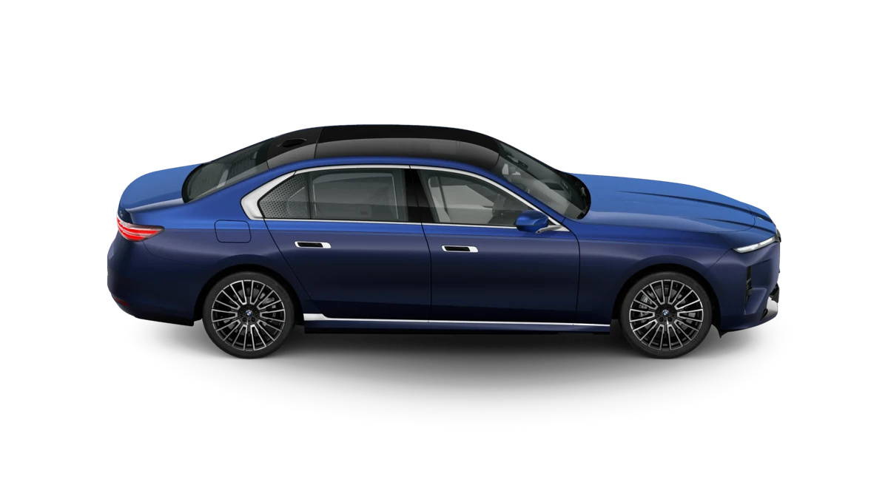

01 / DIGITAL TECHNOLOGYDISCOVER BMW

A cockpit built around the driver.
BMW digital interfaces combine displays and physical controls to make information easier to access while driving. Features depend on the model and market.
- Driver-focused displays
- Intuitive on-screen information
- Model-specific digital features
Educational overview. Availability and specific features vary by BMW model, year and market.